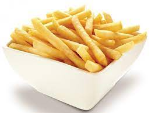

Patatas fritas
Receta de patatas fritas caseras

Ingredientes
3 o 4 patatas
4 dientes de ajo
Aceite de oliva
Sal
Elaboración (Pasos)
Calentar aceite en una sarten
Añadir las patatascortas, aceite y sal
Freir al gusto
Servir en plato